About us
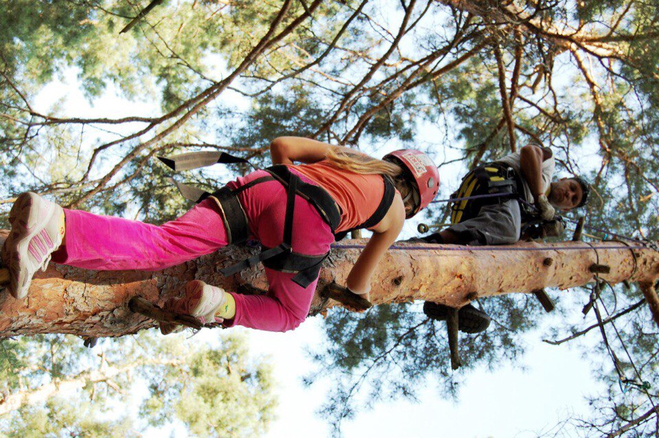
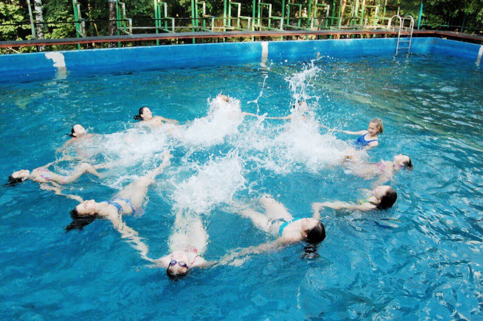
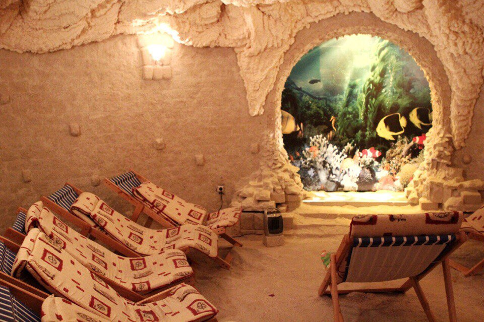
Children's Health Center "Dnipro" is located in the Koncha - Zaspa near the town Kozyn. We are in the ecologically clean area, in the forest.
Our goal is to make your child's holiday interesting, fun, and, most importantly, useful. Children have the opportunity to attend oxygen therapy, massage and exercise therapy.
Our young visitors always have something to do: sports activities of different types, art, foreign language clubs, competitions, quests and a lot of other fascinating things.
The basis of every rest is, of course, the food that our excellent chefs are worried about.
But the main thing is that your child will be surrounded by the excellent teachers and volunteers during the rest! We are always glad to welcome you and your children in «Dnipro»;)
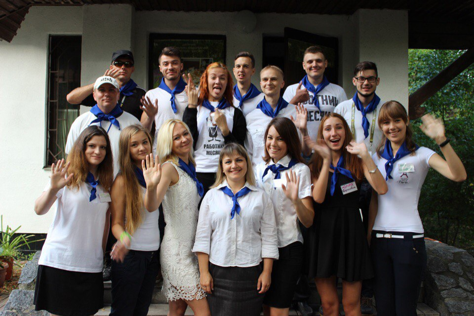
Schedule of arrivals
- І Arrival : 13.06.2017 – 26.06.2017
- ІІ Arrival : 28.06.2017 – 11.07.2017
- ІІІ Arrival : 13.07.2017 – 26.07.2017
- ІV Arrival : 28.07.2017 – 10.08.2017
- V Arrival : 11.08.2017 – 24.08.2017
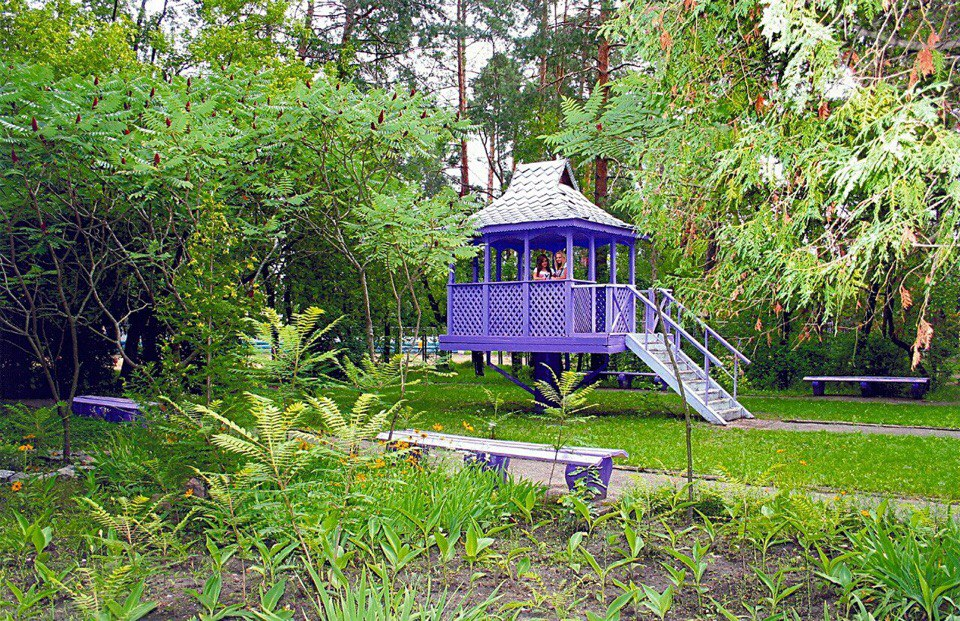
Conditions of rest
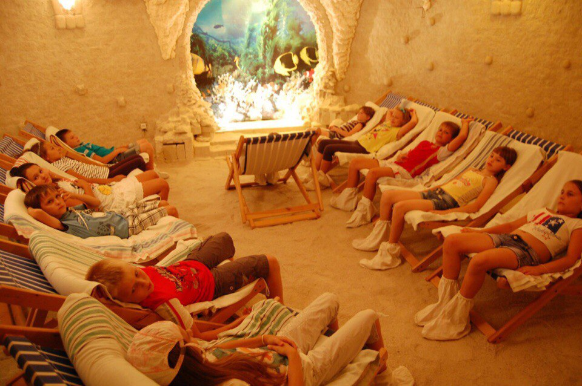
The Children's Health Center "Dnepr" is located in the forest, behind a large settlement in the village Kozyn, Obukhov district, the Kyiv region. Ecologically clean area creates conditions for rest and recreation.
The territory of the center occupies 5, 48 hectares. The territory of "Dnipro" is greened, fenced and guarded day and night.
The housing stock of "Dnipro" includes 383 beds: 323 beds in 6 stationary buildings for our visitors and 60 beds in "Chalet" huts for staff. Housings with centralized heating, round-the-clock water supply of cold and hot water. Children live in double rooms - six-bed rooms. Each room is provided with enough quantity of furniture (beds with orthopedic mattresses, individual bedside tables, wardrobe and clothes drying). The sanitary rooms are on the floor. In the hall of the building there is a lounge, equipped with soft furniture. In the hall there is a cooler with drinking water.
There is a daily cleaning in the buildings. A change of bed linen is every 7 days.
Cultural life of the camp
The children's health center "Dnepr" is not only good for health , but also it is an interesting and fun place for your child. Every day is filled with different cultural events: dance and singing clubs, Art Hut, competitive and concert training, foreign language clubs, interesting quests, martial arts, pilates, yoga, handball, circus, cinema and the most favorite place for children is an evening disco! Therefore, your child will definitely not be sad;)
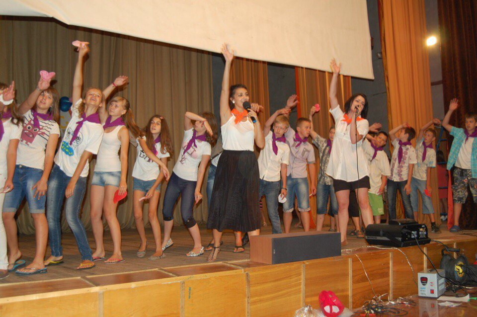
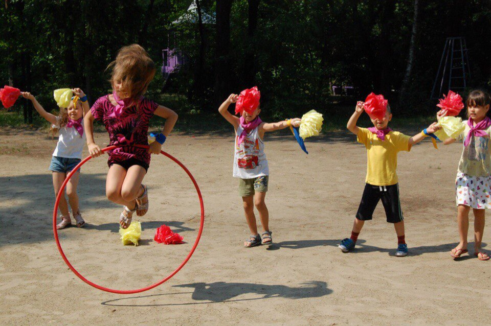
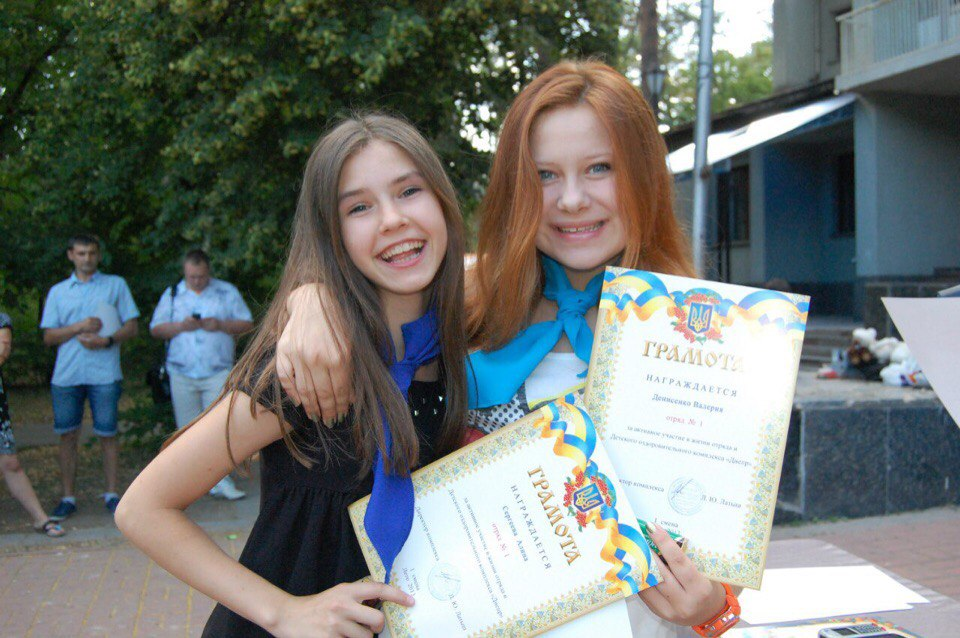
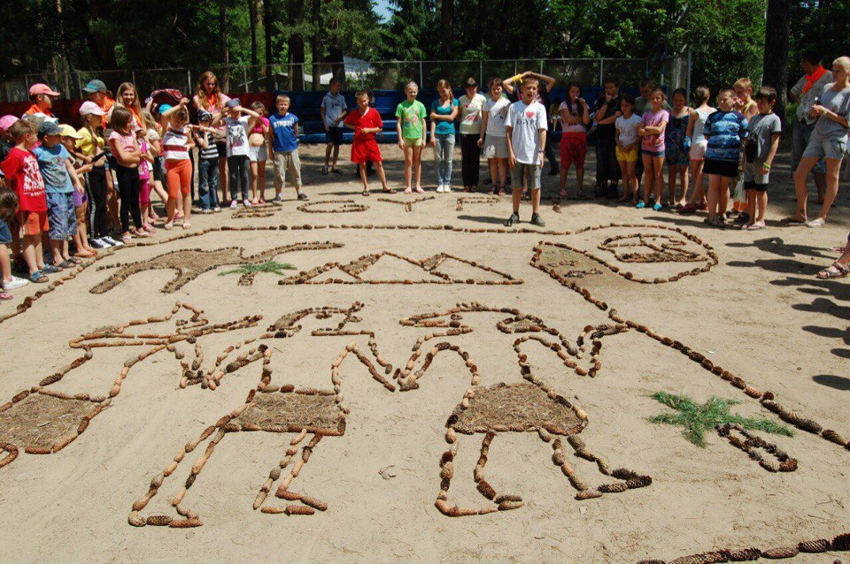
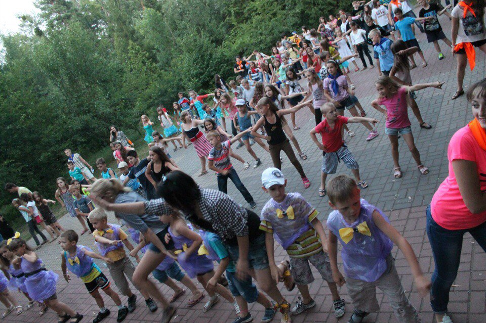
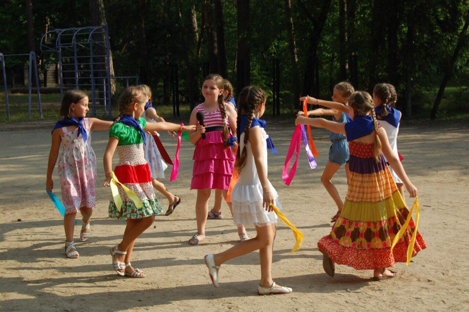
Medical and prophylactic measures
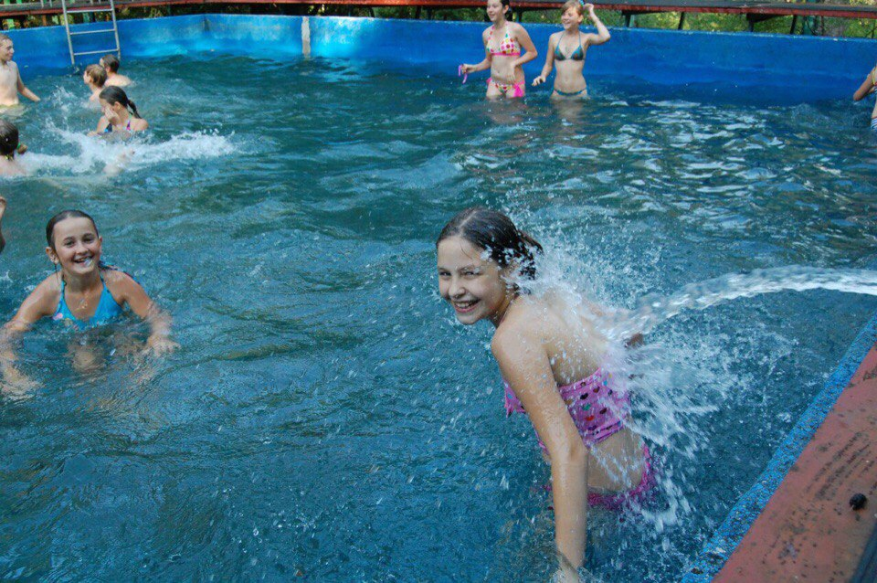
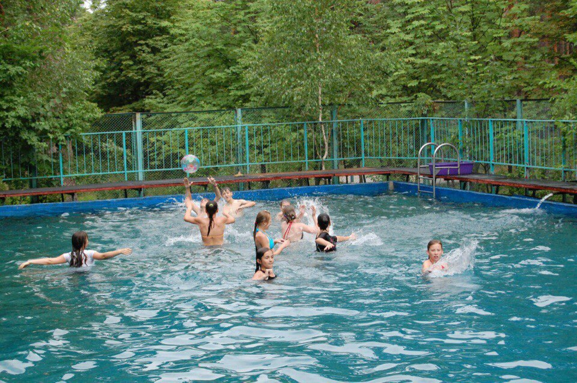
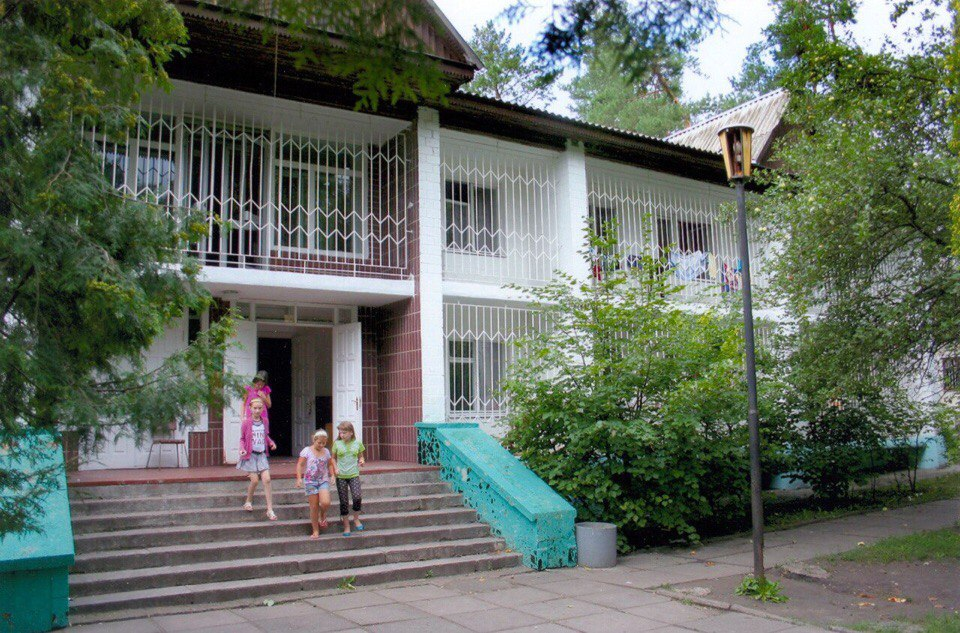
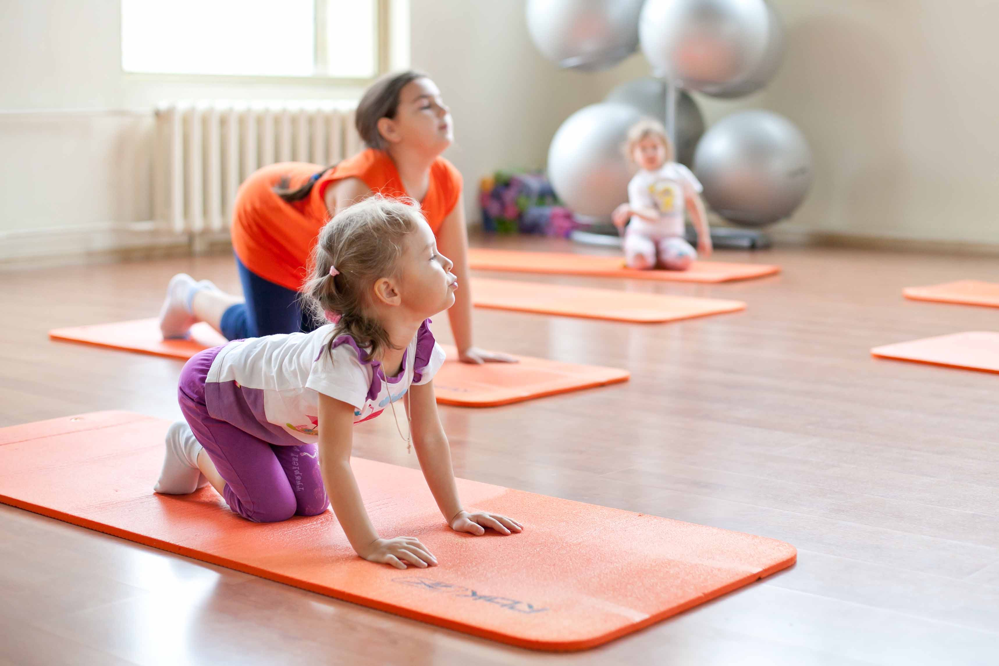
On the territory of the DOC "Dnepr" there is a 20-meter swimming pool, where trainings and competitions are held. Also, all children take an oxygen therapy course and a salt cave course. There is an opportunity to attend sessions of therapeutic and preventive massage and exercise therapy.